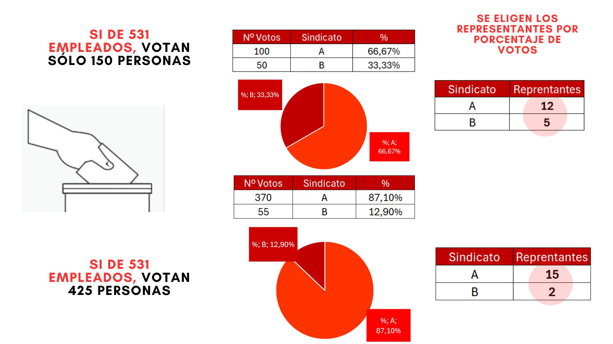

Si te preocupa el cambio de sede, los perjuicios sobrevenidos y que las condiciones en el nuevo edificio sean satisfactorias para todos, ¡VOTA!
Si consideras que tu salario no es acorde con los tiempos que corren, ¡VOTA!
Si para ti es una incertidumbre el teletrabajo, si aún no lo tienes y no sabes por qué, si quieres que esto sea un derecho consolidado, ¡VOTA!
Si te parece adecuado que la Acción Social de ICEX recupere la dotación de fondos perdida y se revise el actual programa para abarcar más sectores, ¡VOTA!
Si te cuesta trabajo conciliar, si no te dejan desconectar en tu tiempo de descanso o ves insuficiente la bolsa de horas de conciliación, ¡VOTA!
Si quieres que las funciones de tu puesto de trabajo sean una realidad y abogas por la creación de una Relación de Puestos de Trabajo (RPT), ¡VOTA!
Si tienes talento y quieres que ICEX te retenga (sin secuestrarte), ¡VOTA!
Si ves que hay mucho que desarrollar para una Carrera Profesional y no quieres que te corten las alas, ¡VOTA!
Si te lanzaron al ruedo sin formación, si dentro del ruedo no te dan instrucciones ni medios, si para ti es importante estar bien formado para hacer un trabajo de calidad, ¡VOTA!
Si ya que tienes que viajar por trabajo te gustaría hacerlo en mejores condiciones de conciliación y retribución, ¡VOTA!
Si te preocupa la antigüedad que tiene nuestro convenio, ¡VOTA! para que podamos negociar acuerdos que incluir cuando se llegue a una negociación.
Si llevas mucho tiempo en ICEX y crees que todos los sindicatos son iguales y no te representan, no te acomodes, ¡VOTA! por un cambio.
Si llevas poco tiempo en ICEX y no sabes de qué va esto, es probable que hayas visto mejoras que se podrían realizar, ¡VOTA! para hacer decisivo este cambio.
Si estás a punto de jubilarte y piensas que para lo que te queda en el convento no te merece la pena, ¡VOTA! para luchar por una actualización justa, y que los que vienen vivan un ICEX mejor.
Si estás en un colectivo distinto del general, ¡VOTA! para que podamos abordar tu caso con sus particularidades propias y los puntos en común a todos.
Si te preocupa la falta de transparencia en la información que recibimos, ¡VOTA!
